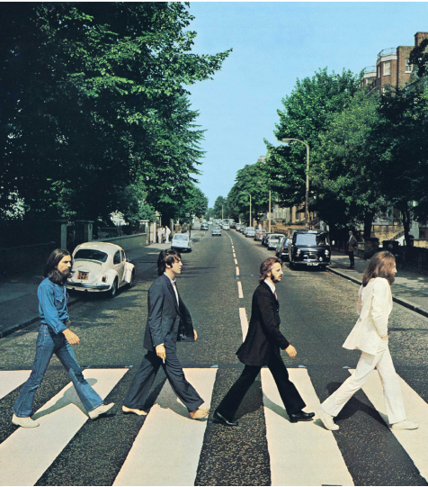
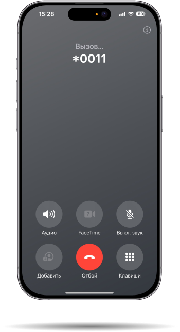

Что делать, если в Вашем дворе не убрали снег? Горячей линии нет, а обращения
на портале "Добродел" и "Госуслуги.Решаем вместе" могут обрабатываться месяц. Основатели Всероссийского общества изобретателей и рационализаторов обратились в Sputnik Solutions, чтобы создать современное решение этой проблемы.
на портале "Добродел" и "Госуслуги.Решаем вместе" могут обрабатываться месяц. Основатели Всероссийского общества изобретателей и рационализаторов обратились в Sputnik Solutions, чтобы создать современное решение этой проблемы.

В XXI веке, по мнению многих специалистов, города конкурируют между собой за людей. В таких условиях городским властям очень важно настроить быструю и качественную систему связи с местными жителями, чтобы оперативно решать проблемы и рассматривать предложения.


Теперь для решения проблемы Вашего города достаточно позвонить Помощнику на номер *0011. Он распознает и классифицирует запрос, если надо — попросит дополнить его. Обработка запроса происходит при помощи искусственного интеллекта, интегрированного в систему.
Помощник губернатора
Помощник губернатора
Помощник губернатора
Помощник губернатора — это инновационное решение на основе искусственного интеллекта, которое существенно ускоряет и упрощает процесс обработки обращений граждан к государственным структурам. Ассистент выслушает проблему, при необходимости задаст уточняющие вопросы, а затем автоматически определит сферу обращения — ЖКХ, здравоохранение, социальная сфера и т.д. — и направит запрос в соответствующую государственную структуру.
Использование ИИ позволит органам власти проще узнавать о проблемах населения и оперативнее их решать.
Помощник губернатора
Помощник губернатора
Помощник губернатора

Что мы сделали:
- Разработали программу на основе ИИ для получения обращений и их дальнейшей классификации
- Настроили удобную горячую линию для обработки звонков граждан
- Реализовали голосового бота-ассистента, принимающего обращения
- Провели интеграцию сервиса с онлайн-приёмными различных государственных структур с целью ускоренной обработки заявок
- Разработали лендинг
140+
городов Московской области уже запустили работу Помощника губернатора. В ближайшее время Помощник будет работать по всей стране.